Multi-material con alfa
No siempre se quiere mapear toda la malla. Igual que ocurre cuando necesitamos añadir un segundo material a la malla, puede suceder que queramos pegar una imagen que sólo ocupe unas cuantas caras.
Supongamos un condensador electrolítico. Está iluminado con tres puntos de luz y presenta este aspecto en el render.
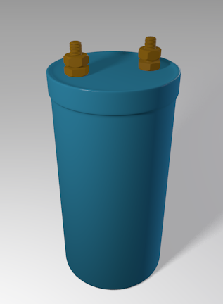Sobre la superficie azul de plástico que lo recubre vamos a añadir esta imagen en formato PNG con fondo transparente.
Cuando mapeamos una malla con modificador Subdivisión asignado es muy conveniente activar allí el icono que obliga a mostrar la malla de alambre tal y como quedará al aplicar el modificador.
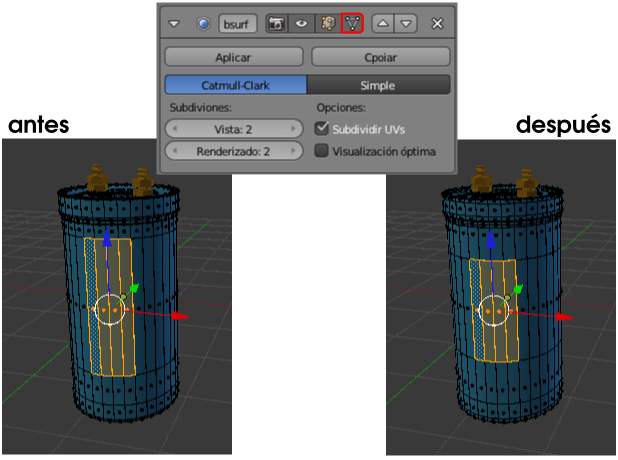Sin duda hay una gran diferencia entre una representación y la otra.
Nos dirigimos al entorno de trabajo UV Editing y cargamos en el Editor UV  la imagen que hemos descargado a nuestro disco duro; luego, en el editor Vista 3D seleccionamos las caras de la superficie que se van a mapear tal y como se ve en la imagen anterior.
la imagen que hemos descargado a nuestro disco duro; luego, en el editor Vista 3D seleccionamos las caras de la superficie que se van a mapear tal y como se ve en la imagen anterior.
Es el momento de dar la orden Malla/Desplegar UVs/Desenvolver. Así se mostrará el Editor UV  .
.
Por la posición de la malla ha resultado que las caras están giradas 90º respecto a la imagen. Aprovechando que ya están todos los vértices seleccionado hacemos una rotación ("R90") y recolocamos en la zona central con "G".
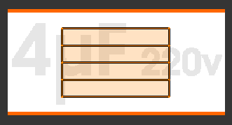Ahora hacemos los escalados necesarios, bien sean generales "S" o restringidos "SX" o "SY". Ayudándonos de la Vista 3D con sombreado Textura activado colocamos la imagen a nuestro gusto. No importa si la malla es mayor que la imagen y en Vista 3D se origina un efecto de repetición en mosaico porque después solucionaremos ese problema.
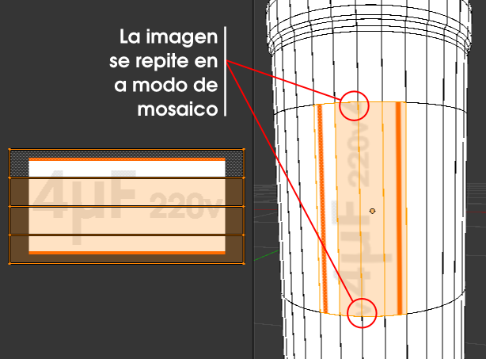Regresamos al entorno de trabajo Default.
Parece que ahora bastaría ir a los Materiales  y en la botonera Opciones activar Textura en caras, pero no es así; el resultado es desastroso, con dos consecuencias en el render:
y en la botonera Opciones activar Textura en caras, pero no es así; el resultado es desastroso, con dos consecuencias en el render:
- El color Difuso asignado a la malla desaparece y es sustituido por un gris neutro. Esto es lógico en realidad, porque la orden Textura en caras debe interpretarse por algo así como Eliminar el color y sustituirlo por la textura.
- El mapeado de la imagen es incorrecto. Algo parece estar fallando por motivo de la transparencia de la imagen en PNG.
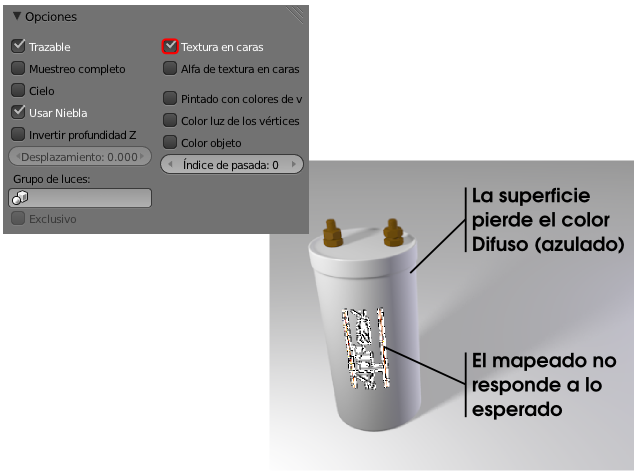
El motivo de los problemas radica en que las caras que contienen el mapeado deben tener asignado el material correspondiente dentro de la propia malla; esto quiere decir que la malla debe tener un segundo material.
Importante
Para continuar adelante desactivamos la opción Textura en caras. Hemos visto que se originan problemas y el primer paso para evitarlos es no usar este recurso.
El segundo material
Recordamos esquemáticamente el proceso para que las caras mapeadas tengan un segundo material:
- Seleccionar
 las caras en cuestión y mantenerse en Modo Edición 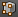.
las caras en cuestión y mantenerse en Modo Edición 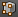.
- Crear un nuevo material con el icono de signo "+" de la derecha. Después elegimos entre crear un nuevo material o asignarle uno de los que ya están creados. En nuestro caso le asignamos el mismo material llamado condensador. Esto hace que Blender nos comunique mediante un número "2" que ese material esta enlazado.
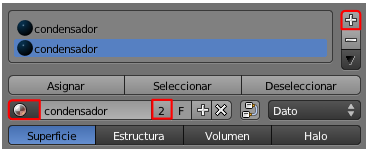
- Pulsar en botón Asignar para que realmente las caras seleccionadas reciban el material.
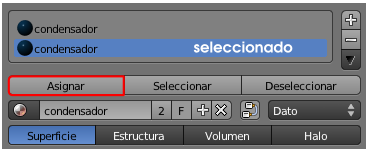
- Hemos conseguido que todos los atributos del material condensador se copien en el segundo material pero nosotros no queremos que sigan enlazados; así que pulsamos el número "2" y después damos un nombre característico a ese material, como puede ser condensador_mapeado.
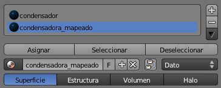
Una vez preparada la malla con los dos materiales es el momento de comenzar a trabajar con el segundo de ellos, el llamado condensador_mapeado. De la parte de Materiales  no nos interesa alterar nada porque al haber quedado desenlazados dejaría de ser igual a condensador y se rompería la estética de nuestro diseño. Así que, nos aseguramos de seleccionar condensador_mapeado y nos vamos al panel Texturas
no nos interesa alterar nada porque al haber quedado desenlazados dejaría de ser igual a condensador y se rompería la estética de nuestro diseño. Así que, nos aseguramos de seleccionar condensador_mapeado y nos vamos al panel Texturas  donde le asignamos una de Tipo: Imagen o película y en la botonera Imagen utilizamos el pequeño icono 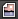 para seleccionar la imagen que hemos usado en el mapeado. El render trae buenas noticias:
donde le asignamos una de Tipo: Imagen o película y en la botonera Imagen utilizamos el pequeño icono 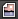 para seleccionar la imagen que hemos usado en el mapeado. El render trae buenas noticias:
- El material condensador está actuando bien sobre el cilindro.
- La textura se intuye en el espacio adecuado. Algo ha salido mal pero todo indica que estamos en el camino correcto.
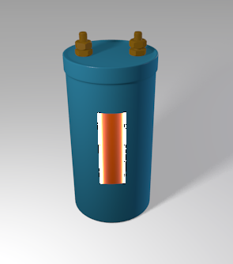
Comenzamos a arreglar todo lo que ha salido mal. Lo más importante ahora es informara Blender de que lo que deseamos es que se utilice el sistema de coordenadas definido en el Editor UV  . La imagen se puede mapear usando muchos sistemas de coordenadas (punto de vista de la cámara, esquina inferior izquierda de la zona mapeada...). No perdemos más tiempo y vamos a la botonera Mapeo para seleccionar Coordenadas: UV.
. La imagen se puede mapear usando muchos sistemas de coordenadas (punto de vista de la cámara, esquina inferior izquierda de la zona mapeada...). No perdemos más tiempo y vamos a la botonera Mapeo para seleccionar Coordenadas: UV.
Ya está la imagen bien colocada y se ve el fondo de color azul determinado por el material concensador_mapeado.
Ahora arreglaremos ese efecto extraño de color blanco que contamina la imagen. La solución: opción Premultiplicar en la botonera Imagen.
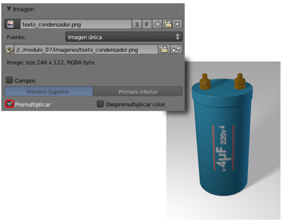Y sólo queda el problema de que la imagen tiende a repetirse de una forma modular. Escogemos Extensión: Recortar en la botonera Mapeo de la imagen.
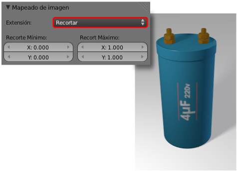